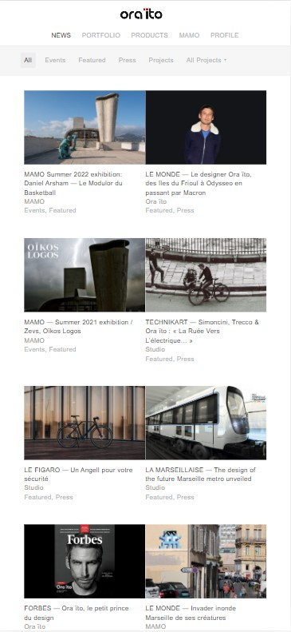
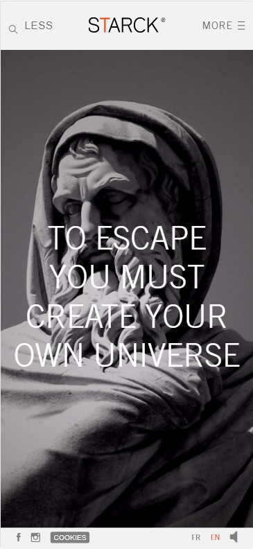
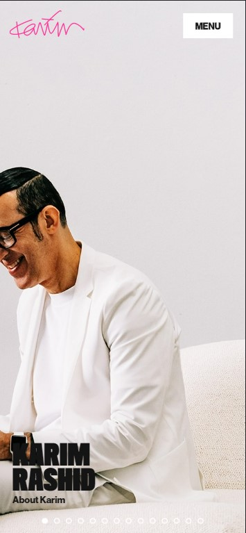

Alignment
Ora-ito
Visit Ora-ito Design
This website shows the principle of Alignment. The center, top, and/or bottom of elements align on an invisible horizontal line, creating vertical alignment.
Contrast
Philippe Starck
Visit Philippe Starck Design
This website shows the principle of contrast on the white title and with its black picture background, making it legible.
Hick's Law
Karim Rashid
Visit Karim Rashid Design
This website simplify the use choice by reducing options and steps to go action, in this case, menu bar.